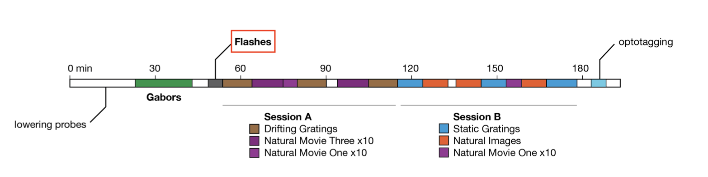

Introduction to Generalized Linear Models using Pynapple and NeMoS#
Authors: Camila Maura, Edoardo Balzani & Guillaume Viejo
In this notebook, we will use Pynapple and NeMoS packages (supported by the Flatiron Institute), to model spiking neural data using Generalized Linear Models (GLM). We will explain what GLMs are and which are their components, then use Pynapple and NeMoS python packages to preprocess real data from the Primary Visual Cortex (VISp) of mice, and use a GLM model to predict spiking neural data as a function of passive visual stimuli. We will also show how, if you have recordings from a large population of neurons simultaneously, you can build connections between the neurons into the GLM in the form of coupling filters.
We will be analyzing data from the Visual Coding - Neuropixels dataset, published by the Allen Institute. This dataset uses extracellular electrophysiology probes to record spikes from multiple regions in the brain during passive visual stimulation. For simplicity, we will focus on the activity of neurons in the visual cortex (VISp) during passive exposure to full-field flashes of color either black (coded as “-1.0”) or white (coded as “1.0”) in a gray background.
We have three main goals in this notebook:
Introduce the key components of Generalized Linear Models (GLMs),
Demonstrate how to pre-process real experimental data recorded from mice using Pynapple, and
Use NeMoS to fit GLMs to that data and explore model-based insights.
By the end of this notebook, you should have a clearer understanding of the fundamental building blocks of GLMs, as well as how Pynapple and NeMoS can streamline the process of modeling and analyzing neural data, making it a much more accessible and efficient endeavor.
Background on GLMs#
A GLM is a regression model which trains a filter to predict a value (output) as it relates to some other variable (or input). In the neuroscience context, we can use a particular type of GLM to predict spikes: the linear-nonlinear-Poisson (LNP) model. This type of model receives one or more inputs and then sends them through a linear “filter” or transformation, passes said transformation through a nonlinearity to get the firing rate and uses that firing rate as the mean of a Poisson distribution to generate spikes. We will go through each of these steps one by one:
Sends the inputs through a linear “filter” or transformation
The inputs (also known as “predictors” or “filters”) are first passed through a linear transformation:
\[ \begin{aligned} L(X) = WX + c \end{aligned} \]Where \(X\) is the input (in matrix form), \(W\) is a matrix and \(c\) is a vector (intercept).
\(L\) scales (makes bigger or smaller) or shifts (up or down) the input. When there is zero input, this is equivalent to changing the baseline rate of the neuron, which is how the intercept should be interpreted. So far, this is the same treatment of an ordinary linear regression.
Passes the transformation through a nonlinearity to get the firing rate.
The aim of a LNP model is to predict the firing rate of a neuron and use it to generate spikes, but if we were only to keep \(L(X)\) as it is, we would quickly notice that we could obtain negative values for firing rates, which makes no sense! This is what the nonlinearity part of the model handles: by passing the linear transformation through an exponential function, it is assured that the resulting firing rate will always be non-negative.
As such, the firing rate in a LNP model is defined:
\[ \begin{aligned} \lambda = exp(L(X)) \end{aligned} \]where \(\lambda\) is a vector containing the firing rates corresponding to each timepoint.
A note on nonlinearity
In NeMoS, the nonlinearity is kept fixed. We default to the exponential, but a small number of other choices, such as soft-plus, are allowed. The allowed choices guarantee both the non-negativity constraint described above, as well as convexity, i.e. a single optimal solution. In principle, one could choose a more complex nonlinearity, but convexity is not guaranteed in general.
What is the difference between a “link function” and the “nonlinearity”?
The link function states the relationship between the linear predictor and the mean of the distribution function. If \(g\) is a link function, \(L(⋅)\) is the linear predictor and \(\lambda\) the mean of the distribution function:
the “nonlinearity” is the name for the inverse of the link function \(g^{-1}(⋅)\).
Uses the firing rate as the mean of a Poisson distribution to generate spikes
In this type of GLM, each spike train is modeled as a sample from a Poisson distribution whose mean is the firing rate — that is, the output of the linear-nonlinear components of the model.
Spiking is a stochastic process. This means that a given firing rate can lead to many different possible spike trains. Since the model could generate an infinite number of spike train realizations, how do we evaluate how well it explains the single observed spike train? We do this by computing the log-likelihood: it quantifies how likely it is to observe the actual spike train given the predicted firing rate. If \( y(t) \) is the observed spike count and \( \lambda(t) \) is the predicted firing rate at time \( t \), then the log-likelihood at time \( t \):
\[ \log P(y(t) \mid \lambda(t)) = y(t)\log\lambda(t) - \lambda(t) -\log(y(t)!) \]However, the term \( -\log(y(t)!) \) does not depend on \( \lambda \), and therefore is constant with respect to the model. As a result, it is usually dropped during optimization, leaving us with the simplified log-likelihood:
\[ \log P(y(t) \mid \lambda(t)) = y(t) \log \lambda(t) - \lambda(t) \]This forms the loss function for LNPs. In practice, we aim to maximize this log-likelihood, which is equivalent to minimizing the negative log-likelihood — that is, finding the firing rate \(\lambda(t)\) that makes the observed spike train as likely as possible under the model.
Why using GLMs?
Why not just use linear regression? Because neural data breaks its key assumptions. Linear regression expects normally distributed data with constant variance, but spike counts are non-Gaussian. Even more problematic, neural variability isn’t constant: neurons that fire more frequently also tend to be more variable. This violates the homoscedasticity assumption that’s fundamental to linear regression, making GLMs a much more suitable framework for modeling neural activity.
GLMs are as easy to fit as linear regression! The objective function (negative log-likelihood) of GLMs with canonical link functions (such as log link which we are using here) is convex, which means there is one local minimum and no local maxima, ensuring convergence to the right answer.
More resources on GLMs
If you would like to learn more about GLMs, you can refer to:
NeMoS GLM tutorial: for a bit more detailed explanation of all the components of a GLM within the NeMoS framework, as well as some nice visualizations of all the steps of the input transformation!
Introduction to GLM - CCN software workshop by the Flatiron Institute: for a step by step example of using GLMs to fit the activity of a single neuron in VISp under current injection.
Neuromatch Academy GLM tutorial: for a bit more detailed explanation of the components of a GLM, slides and some coding exercises to ensure comprehension.
Jonathan Pillow’s COSYNE tutorial: for a longer tutorial of all of the components of a GLM, as well as different types of GLM besides LNP
Environment setup and library imports#
# Install requirements for the databook
try:
from databook_utils.dandi_utils import dandi_download_open
except:
!git clone https://github.com/AllenInstitute/openscope_databook.git
%cd openscope_databook
%pip install -e .
'\ntry:\n from databook_utils.dandi_utils import dandi_download_open\nexcept:\n !git clone https://github.com/AllenInstitute/openscope_databook.git\n %cd openscope_databook\n %pip install -e .\n'
# Import libraries
import seaborn as sns
from scipy.stats import zscore
import numpy as np
import matplotlib.pyplot as plt
import pynapple as nap
import nemos as nmo
Download data#
# Dataset information
dandiset_id = "000021"
dandi_filepath = "sub-726298249/sub-726298249_ses-754829445.nwb"
download_loc = "."
# Download the data using NeMoS
io = nmo.fetch.download_dandi_data(dandiset_id, dandi_filepath)
Now that we have downloaded the data, it is very simple to open the dataset with Pynapple
data = nap.NWBFile(io.read(), lazy_loading=False)
nwb = data.nwb
print(data)
754829445
┍━━━━━━━━━━━━━━━━━━━━━━━━━━━━━━━━━━━━━━━━━━━━━━━━━━━━┯━━━━━━━━━━━━━┑
│ Keys │ Type │
┝━━━━━━━━━━━━━━━━━━━━━━━━━━━━━━━━━━━━━━━━━━━━━━━━━━━━┿━━━━━━━━━━━━━┥
│ units │ TsGroup │
│ static_gratings_presentations │ IntervalSet │
│ spontaneous_presentations │ IntervalSet │
│ natural_scenes_presentations │ IntervalSet │
│ natural_movie_three_presentations │ IntervalSet │
│ natural_movie_one_presentations │ IntervalSet │
│ gabors_presentations │ IntervalSet │
│ flashes_presentations │ IntervalSet │
│ drifting_gratings_presentations │ IntervalSet │
│ timestamps │ Tsd │
│ running_wheel_rotation │ Tsd │
│ running_speed_end_times │ Tsd │
│ running_speed │ Tsd │
│ raw_gaze_mapping/screen_coordinates_spherical │ TsdFrame │
│ raw_gaze_mapping/screen_coordinates │ TsdFrame │
│ raw_gaze_mapping/pupil_area │ Tsd │
│ raw_gaze_mapping/eye_area │ Tsd │
│ optogenetic_stimulation │ IntervalSet │
│ optotagging │ Tsd │
│ filtered_gaze_mapping/screen_coordinates_spherical │ TsdFrame │
│ filtered_gaze_mapping/screen_coordinates │ TsdFrame │
│ filtered_gaze_mapping/pupil_area │ Tsd │
│ filtered_gaze_mapping/eye_area │ Tsd │
│ running_wheel_supply_voltage │ Tsd │
│ running_wheel_signal_voltage │ Tsd │
│ raw_running_wheel_rotation │ Tsd │
┕━━━━━━━━━━━━━━━━━━━━━━━━━━━━━━━━━━━━━━━━━━━━━━━━━━━━┷━━━━━━━━━━━━━┙
Pynapple objects
When printing data, we can see four type of Pynapple objects:
TsGroup: Dictionary-like object to group objects with different timestampsIntervalSet: A class representing a (irregular) set of time intervals in elapsed time, with relative operationsTsd: 1-dimensional container for neurophysiological time series - provides standardized time representation, plus various functions for manipulating times series.TsdFrame: Column-based container for neurophysiological time series
To learn more, please refer to the Pynapple documentation
Extraction, preprocessing and stimuli revision#
Extracting spiking data#
We have a lot of information in data, but we are interested in the units.
(it might take a while the first time that you run this - it’s okay! the dataset is quite big)
units = data["units"]
# See the columns
print(f"columns : {units.metadata_columns}")
# See the dataset
print(units)
columns : ['rate', 'spread', 'velocity_below', 'silhouette_score', 'firing_rate', 'd_prime', 'nn_hit_rate', 'waveform_duration', 'amplitude', 'cluster_id', 'snr', 'local_index', 'peak_channel_id', 'PT_ratio', 'presence_ratio', 'max_drift', 'cumulative_drift', 'repolarization_slope', 'waveform_halfwidth', 'amplitude_cutoff', 'nn_miss_rate', 'quality', 'velocity_above', 'isolation_distance', 'l_ratio', 'recovery_slope', 'isi_violations']
Index rate spread velocity_below silhouette_score firing_rate d_prime nn_hit_rate ...
--------- -------- -------- ---------------- ------------------ ------------- --------- ------------- -----
951763702 2.38003 30.0 nan nan 2.38 4.77 0.98 ...
951763707 0.01147 80.0 nan 0.03 0.01 3.48 0.0 ...
951763711 3.1503 50.0 nan 0.17 3.15 6.08 1.0 ...
951763715 6.53 40.0 nan 0.12 6.53 5.04 0.99 ...
951763720 2.00296 40.0 0.0 0.2 2.0 6.45 0.99 ...
951763724 8.66233 60.0 -7.55 0.22 8.66 3.1 0.86 ...
951763729 11.13402 30.0 -0.69 0.01 11.13 4.61 0.98 ...
... ... ... ... ... ... ... ... ...
951777559 0.02108 110.0 -2.59 nan 0.02 2.95 0.0 ...
951777565 0.08143 140.0 0.46 nan 0.08 4.37 0.29 ...
951777571 0.20088 70.0 0.69 nan 0.2 6.03 0.82 ...
951777576 0.01085 80.0 -0.96 nan 0.01 2.28 nan ...
951777582 0.1457 140.0 -3.49 -0.08 0.15 5.2 0.43 ...
951777593 0.0464 90.0 nan nan 0.05 3.83 0.59 ...
951777600 0.0621 60.0 -0.69 nan 0.06 6.12 0.25 ...
Taking a closer look at the columns, we can see there is a lot of information we do not need. We are solely interested in predicting the spiking activity from the neurons from VISp. Thus, we will remove the metadata from all columns except for rate, quality (to make sure we filter the bad-quality neurons) and peak_channel_id (this last one contains relevant information for brain area identification).
def restrict_cols(cols_to_keep, data):
cols_to_remove = [col for col in data.metadata_columns if col not in cols_to_keep]
data.drop_info(cols_to_remove)
# Choose which columns to remove and remove them
cols_to_keep = ['rate', 'quality','peak_channel_id']
restrict_cols(cols_to_keep,units)
# See the dataset
print(units)
Index rate peak_channel_id quality
--------- -------- ----------------- ---------
951763702 2.38003 850135036 good
951763707 0.01147 850135036 noise
951763711 3.1503 850135038 good
951763715 6.53 850135038 good
951763720 2.00296 850135044 good
951763724 8.66233 850135044 noise
951763729 11.13402 850135044 noise
... ... ... ...
951777559 0.02108 850139336 good
951777565 0.08143 850139526 noise
951777571 0.20088 850139738 good
951777576 0.01085 850139338 good
951777582 0.1457 850139622 good
951777593 0.0464 850139620 good
951777600 0.0621 850139642 good
Here we do not have the brain area information but we need it, so we need to do some preprocessing to extract brain area from the nwb object using the peak_channel_id metadata. Luckily, Pynapple stored the nwb object as well.
# Units and brain areas those units belong to are in two different places.
# With the electrodes table, we can map units to their corresponding brain regions.
def get_unit_location(unit_id):
"""Aligns location information from electrodes table with channel id from the units table
"""
return channel_probes[int(units[unit_id].peak_channel_id)]
channel_probes = {}
electrodes = nwb.electrodes
for i in range(len(electrodes)):
channel_id = electrodes["id"][i]
location = electrodes["location"][i]
channel_probes[channel_id] = location
# Add a new column to include location in our spikes TsGroup
units.brain_area = [channel_probes[int(ch_id)] for ch_id in units.peak_channel_id]
# Remove peak_channel_id because we already got the brain_area information
units.drop_info("peak_channel_id")
print(units)
Index rate quality brain_area
--------- -------- --------- ------------
951763702 2.38003 good PoT
951763707 0.01147 noise PoT
951763711 3.1503 good PoT
951763715 6.53 good PoT
951763720 2.00296 good PoT
951763724 8.66233 noise PoT
951763729 11.13402 noise PoT
... ... ... ...
951777559 0.02108 good LP
951777565 0.08143 noise DG
951777571 0.20088 good VISpm
951777576 0.01085 good LP
951777582 0.1457 good CA1
951777593 0.0464 good CA1
951777600 0.0621 good CA1
Extracting trial structure#
Mice were exposed to a series of stimuli (gabor patches, flashes, natural images, etc.), out of which we are exclusively interested in flashes presentation for this tutorial.

During the flashes presentation trials, mice were exposed to white or black full-field flashes in a gray background, each lasting 250 ms, and separated by a 2 second inter-trial interval. In total, they were exposed to 150 flashes (75 black, 75 white).
# Extract flashes as an Interval Set object
flashes = data["flashes_presentations"]
# Remove unnecessary columns, similarly to above
cols_to_keep = ['color']
restrict_cols(cols_to_keep, flashes)
print(flashes)
index start end color
0 1285.600869922 1285.851080039 -1.0
1 1287.602559922 1287.852767539 -1.0
2 1289.604229922 1289.854435039 -1.0
3 1291.605889922 1291.856100039 -1.0
4 1293.607609922 1293.857807539 1.0
5 1295.609249922 1295.859455039 -1.0
6 1297.610959922 1297.861155039 1.0
... ... ... ...
143 1571.840009922 1572.090212539 -1.0
144 1573.841669922 1574.091877539 1.0
145 1575.843359922 1576.093562539 1.0
146 1577.845019922 1578.095227539 -1.0
147 1579.846709922 1580.096915039 1.0
148 1581.848389922 1582.098595039 1.0
149 1583.850039922 1584.100247539 -1.0
shape: (150, 2), time unit: sec.
Create an object for white and a separate object for black flashes
flashes_white = flashes[flashes["color"] == "1.0"]
flashes_black = flashes[flashes["color"] == "-1.0"]
And we can plot the stimuli
plot_stimuli()
To analyze how units’ activity evolves around the time of stimulus presentation, we can extend each stimulus interval to include some time before and after the flash. Specifically, we add 500 ms before the flash onset and 500 ms after the flash offset. This gives us a window that captures pre-stimulus baseline activity and any delayed neural responses.
dt = .50 # 500 ms
start = flashes.start - dt # Start 500 ms before stimulus presentation
end = flashes.end + dt # End 500 ms after stimulus presentation
extended_flashes = nap.IntervalSet(start,end, metadata=flashes.metadata)
print(extended_flashes)
index start end color
0 1285.100869922 1286.351080039 -1.0
1 1287.102559922 1288.352767539 -1.0
2 1289.104229922 1290.354435039 -1.0
3 1291.105889922 1292.356100039 -1.0
4 1293.107609922 1294.357807539 1.0
5 1295.109249922 1296.359455039 -1.0
6 1297.110959922 1298.361155039 1.0
... ... ... ...
143 1571.340009922 1572.590212539 -1.0
144 1573.341669922 1574.591877539 1.0
145 1575.343359922 1576.593562539 1.0
146 1577.345019922 1578.595227539 -1.0
147 1579.346709922 1580.596915039 1.0
148 1581.348389922 1582.598595039 1.0
149 1583.350039922 1584.600247539 -1.0
shape: (150, 2), time unit: sec.
This extended IntervalSet, extended_flashes, will later allow us to restrict units’ activity to the periods surrounding each flash stimulus.
We now create one object for white and another for black extended flashes.
extended_flashes_white = extended_flashes[extended_flashes["color"]=="1.0"]
extended_flashes_black = extended_flashes[extended_flashes["color"]=="-1.0"]
Preprocessing spiking data#
There are multiple reasons for filtering units. Here, we will use four criteria: brain area, quality of units, firing rate and responsiveness
Brain area: we are interested in analyzing VISp units for this tutorial
Quality: we will only select “good” quality units
Firing rate: overall, we want units with a firing rate larger than 2Hz around the presentation of stimuli
Responsiveness: for the purposes of the tutorial, we will select the most responsive units (top 15%), and only use those for further analysis. We define responsiveness as the normalized difference between post stimulus and pre stimulus average firing rate.
What does it mean for a unit to be of “good” quality?
More information on unit quality metrics can be found in Visualizing Unit Quality Metrics
# Filter units according criteria 1 & 2
units = units[
(units["brain_area"]=="VISp") &
(units["quality"]=="good")
]
# Restrict around stimuli presentation
units = units.restrict(extended_flashes)
# Filter according to criterion 3
units = units[(units["rate"]>2.0)]
print(units)
Index rate quality brain_area
--------- -------- --------- ------------
951765440 2.32495 good VISp
951765454 22.6523 good VISp
951765460 2.29829 good VISp
951765467 25.80912 good VISp
951765485 22.96158 good VISp
951765547 2.83687 good VISp
951765552 5.69507 good VISp
... ... ... ...
951768823 5.40712 good VISp
951768830 7.58276 good VISp
951768835 5.60442 good VISp
951768881 4.01534 good VISp
951768894 4.2713 good VISp
951769295 2.23963 good VISp
951769344 2.91152 good VISp
Now, to calculate responsiveness, we need to do some preprocessing to align units’ spiking timestamps with the onset of the stimulus repetitions, and then take an average over them. For this, we will use the compute_perievent function, which allows us to re-center time series and timestamps around particular events and compute spikes-triggered averages.
# Set window of perievent 500 ms before and after the start of the event
window_size = (-.250, .500)
# Re-center timestamps for white stimuli
# +50 because we subtracted 500 ms at beginning of stimulus presentation
peri_white = nap.compute_perievent(timestamps = units,
tref = nap.Ts(extended_flashes_white.start +.50),
minmax = window_size
)
# Re-center timestamps for black stimuli
# +50 because we subtracted 500 ms at beginning of stimulus presentation
peri_black = nap.compute_perievent(timestamps = units,
tref = nap.Ts(extended_flashes_black.start +.50),
minmax = window_size
)
The output of the perievent is a dictionary of TsGroup objects, indexed by each unit ID.
Will the output of compute_perievent always be a dictionary?
No. In this case it is because the input was a TsGroup containing the spiking information of multiple units. Had it been a Ts/Tsd/TsdFrame/TsdTensor (only one unit), then the output of compute_perievent would have been a TsGroup.
For more information, please refer to Pynapple documentation for processing perievents.
When we index an element of this dictionary, we retrieve the spike times aligned to stimulus onset for a single unit, across all repetitions of the stimulus. These spike times are centered around the stimulus within the specified window_size. You’ll notice that the ref_times in the perievent output correspond exactly to the start times of the stimulus presentations!
# Let's select one unit
example_id = 951765485
print(f"Number of trials: {len(peri_black[example_id])}\n ")
# And print it's rates
print(f"TsGroup of centered activity for unit {example_id}: \n {peri_black[example_id]}\n")
# Start times of black flashes presentation
print(f"black flashes start times: \n {flashes_black.starts}")
Number of trials: 75
TsGroup of centered activity for unit 951765485:
Index rate ref_times
------- -------- -----------
0 18.66667 1285.6
1 18.66667 1287.6
2 12.0 1289.6
3 9.33333 1291.61
4 32.0 1295.61
5 20.0 1303.62
6 18.66667 1307.62
... ... ...
68 13.33333 1561.83
69 6.66667 1563.83
70 8.0 1565.83
71 12.0 1569.84
72 20.0 1571.84
73 12.0 1577.85
74 10.66667 1583.85
black flashes start times:
Time (s)
1285.600869922
1287.602559922
1289.604229922
1291.605889922
1295.609249922
1303.615919922
1307.619279922
...
1561.831629922
1563.833279922
1565.834999922
1569.838349922
1571.840009922
1577.845019922
1583.850039922
shape: 75
Let’s inspect a bit further our TsGroup objects with the centered spikes. If we grab the FIRST element of peri_black[example_id], we would get the spike times centered around the FIRST presentation of stimulus.
print(peri_black[example_id][0])
Time (s)
-0.128226254
-0.12362626
0.070806812
0.132140063
0.223106608
0.252739902
0.270706544
0.305906497
0.308506494
0.330173131
0.401073036
0.434739658
0.455372963
0.471839608
shape: 14
Negative spike times are expected here because the spike times in peri_white and peri_black are aligned relative to stimulus onset. A negative time means the spike occurred before the stimulus was presented, while a positive time indicates the spike occurred after stimulus onset. This alignment allows us to analyze how neuronal activity changes around the time of stimulus presentation.
We can also visualize these aligned spike times to better understand the timing and rate of neural responses relative to the stimulus. This type of plot is known as a Peristimulus Time Histogram (PSTH), and it shows how spiking activity is distributed around the stimulus onset. Let’s generate a PSTH for the first 9 units to explore their response patterns.
bin_size = 0.005 # Bin size
# Plot PSTH and spike raster plots
plot_raster_psth(peri_white, units, "white", bin_size)
plot_raster_psth(peri_black, units, "black", bin_size)
How to choose bin size?
The bin_size determines the width of the time bins used to discretize the spike train. For example, a bin size of 0.005 means each second is divided into 200 bins of 5 milliseconds each. Smaller bin sizes provide higher temporal resolution, allowing you to detect rapid changes in firing rate, while larger bin sizes smooth out the activity over time but may obscure fine temporal dynamics.
In this tutorial, we use a bin size of 0.005, but there is no one-size-fits-all rule. The optimal bin size depends on the timescale of the neural activity you are modeling. For fast, precisely timed responses, a small bin size may be necessary. For slower or more sustained responses, larger bins may be more appropriate. Ultimately, it’s a modeling decision that should balance resolution with interpretability and noise.
Why does the PSTH plot look so smooth?
We are using the smooth function from Pynapple to apply Gaussian smoothing to the perievent time series before plotting. This reduces trial-to-trial variability and emphasizes consistent temporal patterns in firing rate, making features like peaks or latency shifts easier to interpret—especially when spike trains are noisy or sparse.
In this tutorial, we use a Gaussian kernel with a standard deviation of 0.015 seconds.
To convert the standard deviation from seconds to bins, we divide by the bin size:
\( \begin{aligned} \frac{0.015}{0.005} = 3 \text{ bins} \end{aligned} \)
For implementation details, refer to the Pynapple documentation.
In the plot above, we can see that some units (951765552, pink or 951765557, gray) are clearly more responsive than others (951765454, orange), which are apparently not modulated by the flashes. Thus, it would make sense to take a subset of the neurons, the most responsive ones, and model those.
We will now calculate responsiveness for each neuron as the normalized difference between average firing rate before and after stimulus presentation, and select the most responsive ones for further analyses.
# Calculate responsiveness
responsiveness_white,_ = get_responsiveness(peri_white, bin_size)
responsiveness_black,_ = get_responsiveness(peri_black, bin_size)
# Add responsiveness as metadata for units
units.set_info(responsiveness_white=responsiveness_white)
units.set_info(responsiveness_black=responsiveness_black)
# See metadata
print(units)
Index rate quality brain_area responsiveness_white responsiveness_black
--------- -------- --------- ------------ ---------------------- ----------------------
951765440 2.32495 good VISp 0.14 0.28
951765454 22.6523 good VISp 0.02 0.02
951765460 2.29829 good VISp 0.18 0.0
951765467 25.80912 good VISp 0.17 0.22
951765485 22.96158 good VISp 0.15 0.39
951765547 2.83687 good VISp 0.39 0.0
951765552 5.69507 good VISp 0.75 0.81
... ... ... ... ... ...
951768823 5.40712 good VISp 0.03 0.4
951768830 7.58276 good VISp 0.15 0.47
951768835 5.60442 good VISp 0.07 0.27
951768881 4.01534 good VISp 0.5 0.27
951768894 4.2713 good VISp 0.09 0.46
951769295 2.23963 good VISp 0.2 0.45
951769344 2.91152 good VISp 0.68 0.92
Now I can keep the top 15% most responsive units for ongoing analyses.
# Get threshold for top 15% most responsive
thresh_black = np.percentile(units["responsiveness_black"], 85)
thresh_white = np.percentile(units["responsiveness_white"], 85)
# Only keep units that are within the 15% most responsive for either black or white
units = units[(units["responsiveness_black"] > thresh_black) | (units["responsiveness_white"] > thresh_white)]
print(units)
print(f"\nRemaining units: {len(units)}")
Index rate quality brain_area responsiveness_white responsiveness_black
--------- ------- --------- ------------ ---------------------- ----------------------
951765552 5.69507 good VISp 0.75 0.81
951765732 4.31929 good VISp 0.9 1.0
951768154 2.82087 good VISp 0.64 0.89
951768278 3.43944 good VISp 0.5 0.66
951768285 4.06867 good VISp 0.91 0.3
951768291 2.77821 good VISp 0.99 0.5
951768307 2.32495 good VISp 0.88 0.5
... ... ... ... ... ...
951768586 2.82087 good VISp 0.59 0.52
951768621 3.41278 good VISp 0.35 0.59
951768632 5.93503 good VISp 0.16 0.79
951768749 2.04767 good VISp 0.94 0.91
951768754 2.76755 good VISp 0.78 1.0
951768815 2.23963 good VISp 0.59 0.76
951769344 2.91152 good VISp 0.68 0.92
Remaining units: 19
Revision of stimuli and spiking data#
Now that we have selected the units we will use for our analyses, we can see how these look alongside the stimuli in a raster plot:
raster_plot(data, units)
Above we can see a spike raster plot from the selected VISp units displayed alongside the black and white flashes presented to the mice. Each row represents spike times from a different unit. Black and silver bars indicate the presentation of black and white flashes, respectively. The bright red vertical lines mark the windows of interest, 500 ms before stimulus onset and 500 ms after stimulus offset, which are shaded in light red. Spikes occurring within these windows (the shaded red areas) are the ones that will be used for model fitting.
We can also look with each unit’s activity centered around the flashes presentation with a PSTH, as we did before.
# Get the perievent for a subset of the units (most responsive ones)
peri_white = {k: peri_white[k] for k in units.index if k in peri_white}
peri_black = {k: peri_black[k] for k in units.index if k in peri_black}
params_obs = [peri_white,
peri_black]
# Plot PSTH and spike raster plots
plot_raster_psth(peri_white, units, "white", bin_size)
plot_raster_psth(peri_black, units, "black", bin_size)
Splitting the dataset in train and test#
We could train the model on the entire dataset. However, if we do so, we wouldn’t have a way to assess whether the model is truly capable of making accurate predictions or if it’s simply overfitting to the data. The simplest way around this is to have a reserved part of the data for testing.
Here, we will split the data in two: 70% will be for training and 30% will be for testing. However, we can’t simply grab the first 70% timeseries - what if we are biasing our sample and there are some neurons that respond only towards the end or the beginning of the recording? For that, we will gather one every three flashes, and those will go to the testing set. The rest, will go to the training set.
How to decide how to split my data?
The optimal way to split your data depends on your specific research question, the structure of your data, and the modeling goals. There’s no single correct approach—splitting strategies can and should be adapted to the context.
For example, you might choose a simple two-way split (training and test), or include a third validation set to tune model parameters before final testing. Some researchers split their data 50/50, while others use more unbalanced ratios depending on dataset size.
In some cases, it may make sense to split based on stimulus properties or experimental design. Suppose you suspect that a mouse’s response to white flashes changes with repeated exposure—e.g., due to habituation. Then, randomly mixing all trials might obscure important patterns. Instead, separating interleaved vs. repeated flash conditions could give you a more meaningful evaluation of model generalization.
# We take one every three flashes (33% of all flashes of test)
flashes_test_white = extended_flashes_white[::3]
flashes_test_black = extended_flashes_black[::3]
Pynapple has a nice function to get all the epochs: set_diff. With it, we can get all of the interval sets which are not in the interval set passed as argument.
# The remaining is separated for training
flashes_train_white = extended_flashes_white.set_diff(flashes_test_white)
flashes_train_black = extended_flashes_black.set_diff(flashes_test_black)
Consider black and white for test and train
using union
# Merge both stimuli types in a single interval set
flashes_test = flashes_test_white.union(flashes_test_black)
flashes_train = flashes_train_white.union(flashes_train_black)
Now that we have our intervals correctly, we can use restrict to get our test and train sets for units
# General spike counts
units_counts = units.count(bin_size, ep = extended_flashes)
# Restrict counts to test and train
units_counts_test = units_counts.restrict(flashes_test)
units_counts_train = units_counts.restrict(flashes_train)
Fitting a GLM#
Preparing the data for NeMoS#
Now that we have a good understanding of our data, and that we have split our dataset in the corresponding test and train subsets, we are almost ready to run our model. However, before we can construct it, we need to get our data in the right format.
When fitting a single neuron, NeMoS requires that the predictors and spike counts it operates on have the following properties:
predictors and spike counts must have the same number of time points.
predictors must be two-dimensional, with shape
(n_time_bins, n_features). So far, we have two features in this tutorial: white and black flashes.spike counts must be one-dimensional, with shape
(n_time_bins,).predictors and spike counts must be jax.numpy arrays, numpy arrays,
TsdorTsdFrame.
When fitting multiple neurons, spike counts must be two-dimensional: (n_time_bins, n_neurons). In that case, spike can be TsGroup objects as well.
First, we can make sure that our predictors and our spike counts have the same number of time bins.
# Create a TsdFrame filled by zeros, for the size of units_counts
predictors = nap.TsdFrame(
t=units_counts.t,
d=np.zeros((len(units_counts), 2)),
columns = ['white', 'black']
)
At the moment, the flashes are in a IntervalSet, we need to grab them and make them time series of stimuli, separated by black and white (because we are interested in how neurons’ responses are modulated by each individual stimulus type separately).
# Check whether there is a flash within a given bin of spikes
# If there is not, put a nan in that index
idx_white = flashes_white.in_interval(units_counts)
idx_black = flashes_black.in_interval(units_counts)
# Replace everything that is not nan with 1 in the corresponding column
predictors.d[~np.isnan(idx_white), 0] = 1
predictors.d[~np.isnan(idx_black), 1] = 1
print(predictors)
Time (s) white black
-------------- ------- -------
1285.103369922 0.0 0.0
1285.108369922 0.0 0.0
1285.113369922 0.0 0.0
1285.118369922 0.0 0.0
1285.123369922 0.0 0.0
1285.128369922 0.0 0.0
1285.133369922 0.0 0.0
... ... ...
1584.567539922 0.0 0.0
1584.572539922 0.0 0.0
1584.577539922 0.0 0.0
1584.582539922 0.0 0.0
1584.587539922 0.0 0.0
1584.592539922 0.0 0.0
1584.597539922 0.0 0.0
dtype: float64, shape: (37500, 2)
predictors and units_counts match in the first dimension because they have the same number of timepoints, as intended. Meanwhile, in the second dimension, predictors is 2 because we have black and white flashes, and counts has 19 because the selected units for this tutorial sums to 19.
print(f"predictors shape: {predictors.shape}")
print(f"\ncount shape: {units_counts.shape}")
Just to make sure that we got the right output, let’s plot our new predictors TsdFrame as lines alongside our first plot.
stimuli_plot(predictors)
They match perfectly!
As a last preprocessing step, let’s just split predictors in train and test.
predictors_test = predictors.restrict(flashes_test)
predictors_train = predictors.restrict(flashes_train)
Constructing the design matrix using basis functions#
Right now, our predictors consist of the black and white flash values at each time point. However, this setup assumes that the neuron’s spiking behavior is driven only by the instantaneous flash presentation. In reality, neurons integrate information over time — so why not modify our predictors to reflect that?
We can achieve this by including variables that represent the history of exposure to the flashes. For this, we must decide the duration of time that we think is relevant: does the exposure to flashes 10 ms ago matter? What about 100 ms ago? 1s? We should use priori knowledge of our system to determine a initial value.
For this tutorial, we will use the whole duration of the stimuli as relevant history. That is, we will model each unit’s response to 250 ms full-field flashes by capturing how stimulus history over that duration influences spiking. We therefore define a 250 ms stimulus window, aligned with the flash onset, which spans the entire stimulus duration. This window enables the GLM to learn how the neuron’s firing rate evolves throughout the flash. Using a shorter window could omit delayed effects, while a longer window may incorporate unrelated post-stimulus activity.
To construct our stimulus history predictor, we could generate time-lagged copies of the stimulus input (in the form of a Hankel Matrix). Specifically, the value of the first predictor at time \( t \) would correspond to the stimulus at time \( t \), while the second predictor would capture the stimulus at time \( t - 1 \) , and so on, up to a maximum lag corresponding to the length of the stimulus integration window (250 ms in our case).
How do you build a Hankel matrix?
Every row is a shifted copy of the row above!
Construction of Hankel Matrix. Modified from Pillow [2018] [3].
For an example on how to build a design matrix using the raw history as a predictor, see this GLM notebook or this NeMoS Fit GLMs for neural coupling tutorial.
However, modeling each time lag with an independent parameter leads to a high-dimensional filter that is prone to overfitting (given that we are using a bin size of 0.005, we would end up with 50 lags = 50 parameters per flash color!) A better idea is to do some dimensionality reduction on these predictors, by parametrizing them using basis functions. This will allow us to capture interesting non-linear effects with a relatively low-dimensional parametrization that preserves convexity.
The way you perform this dimensionality reduction should be carefully considered. Choosing the appropriate type of basis functions, deciding how many to include, and setting their parameters all depend on the specifics of your problem. It’s essential to reflect on which aspects of the stimulus history are worth retaining and how best to represent them. For instance, do you expect sharp transient responses right after stimulus onset? Or are you more interested in slower, sustained effects?
Note
NeMoS has a whole library of basis objects available at nmo.basis. You can explore the different options available there and think carefully about which one best matches your problem and assumptions.
Certain aspects of our units’ response dynamics suggest that applying multiple basis transformations to the stimulus can help better capture the structure that drives the units’ activity. In particular, some neurons exhibit a strong response immediately after flash onset, while others (or the same unit) show an additional peak in activity at flash offset.
These distinct temporal features motivate us to model the onset and offset components separately, using tailored basis functions for each. Considering that, we will apply three distinct transformations to our predictors, each targeting a specific portion or feature of the stimulus:
Flash onset (beginning): We will convolve the early phase of the flash presentation with a basis function. This allows for fine temporal resolution immediately after stimulus onset, where rapid neural responses are often expected.
Flash offset (end): We will convolve the later phase of the flash (around its end) with a different basis function. This emphasizes activity changes around stimulus termination.
Full flash duration (smoothing): We will convolve the entire flash period with a third basis function, serving as a smoother to capture more sustained or slowly varying effects across the full stimulus window.
First, we will transform our predictors to get flash onset and offset. We should do this for train
white_train_on = nap.Tsd(
t=predictors_train.t,
d=np.hstack((0,np.diff(predictors_train["white"])==1)),
time_support = units_counts_train.time_support
)
white_train_off = nap.Tsd(
t=predictors_train.t,
d=np.hstack((0,np.diff(predictors_train["white"])==-1)),
time_support = units_counts_train.time_support
)
# Black train
black_train_on = nap.Tsd(
t=predictors_train.t,
d=np.hstack((0,np.diff(predictors_train["black"])==1)),
time_support = units_counts_train.time_support
)
black_train_off = nap.Tsd(
t=predictors_train.t,
d=np.hstack((0,np.diff(predictors_train["black"])==-1)),
time_support = units_counts_train.time_support
)
and test set.
# White test
white_test_on = nap.Tsd(
t=predictors_test.t,
d=np.hstack((0,np.diff(predictors_test["white"])==1)),
time_support=units_counts_test.time_support
)
white_test_off = nap.Tsd(
t=predictors_test.t,
d=np.hstack((0,np.diff(predictors_test["white"])==-1)),
time_support=units_counts_test.time_support
)
# Black test
black_test_on = nap.Tsd(
t=predictors_test.t,
d=np.hstack((0,np.diff(predictors_test["black"])==1)),
time_support=units_counts_test.time_support
)
black_test_off = nap.Tsd(
t=predictors_test.t,
d=np.hstack((0,np.diff(predictors_test["black"])==-1)),
time_support=units_counts_test.time_support
)
What are np.diff and np.hstack doing?
np.diff is a NumPy function that computes the difference between consecutive elements in an array.
Our stimulus predictors are binary: they take the value 0 when no flash is present, and 1 during the flash. For example, a typical pattern might look like:
[0, 0, 0, 0, 1, 1, 1, 0, 0]
Calling np.diff on this array will compute:
[0, 0, 0, 1, 0, 0, -1, 0]
This result highlights transitions:
A value of 1 indicates the start of a flash (0 → 1),
A value of -1 indicates the end of a flash (1 → 0),
All other values represent no change.
However, because np.diff returns an array that is one element shorter than the original, we prepend a 0 using np.hstack to align it with the original timestamps.
We now have our predictors, it’s time to choose which basis functions are the most suitable for our ends.
For history-type inputs like we’re discussing, the raised cosine log-stretched basis first described in Pillow et al. [2005] [4] is a good fit. This basis set has the nice property that their precision drops linearly with distance from event, which makes sense for many history-related inputs in neuroscience: whether an input happened 1 or 5 ms ago matters a lot, whereas whether an input happened 51 or 55 ms ago is less important. We will apply this basis function to the beginning of the flash.
Another very useful transformation we can apply to our predictors is that of the raised cosine linearly spaced basis, in which the domain is uniformly covered. This is an interesting basis because it is symmetric. We will apply this to the end of the flash.
To see how these look convolved with the stimuli, let’s create our basis objects!
When we instantiate a basis object, the only arguments we must specify is the number of functions we want and the mode of operation of the basis:
Number of functions: with more basis functions, we’ll be able to represent the effect of the corresponding input with the higher precision, at the cost of adding additional parameters.
Mode of operation: either
Convfor convolutional orEvalfor evaluation form of the basis. This is determined by the type of feature we aim to represent. This is not a parameter; instead, the choice of basis will includeConvorEvalin the name.
When should I use the convolutional or evaluation form of the basis?
Evaluation bases transform the input through the non-linear function defined by the basis. This can be used to represent features such as spatial location and head direction.
Convolution bases apply a convolution of the input data to the bank of filters defined by the basis, and is particularly useful when analyzing data with inherent temporal dependencies, such as spike history or the history of flash exposure in this example. In convolution mode, we must additionally specify the
window_size(the length of the filters in bins).
Since we are using Convolution bases, we need to specify the window_size. In this tutorial, we will use 250 ms.
# Duration of stimuli
stimulus_history_duration = 0.250
# Window length in bin size units
window_len = int(stimulus_history_duration / bin_size)
Now we can initialize our basis objects. As mentioned, for each flash type (white and black), we will create three separate basis objects: one for the onset of the flash, one for the offset, and one that spans the entire duration of the flash. In this tutorial, each basis object will have 5 basis functions.
How many functions should I use for each basis object?
When conducting your own analysis, you should carefully consider what number of basis functions is optimal for your specific dataset and scientific question. Too few may poorly predict the dynamics; too many may lead to overfitting or unnecessary complexity. You can conduct cross validation to find the optimal number of basis functions. For more information on how to tune your bases, you can refer to NeMoS notebook on conducting cross validation for bases.
# Initialize basis objects
# White
# Raised Cosine Log Stretched basis for "On"
basis_white_on = nmo.basis.RaisedCosineLogConv(
n_basis_funcs = 5,
window_size = window_len,
label = "white_on"
)
# Raised Cosine Linear basis for "Off"
basis_white_off = nmo.basis.RaisedCosineLinearConv(
n_basis_funcs = 5,
window_size = window_len,
label = "white_off",
conv_kwargs = {"predictor_causality":"acausal"}
)
# Raised Cosine Log Stretched basis for smoothing throughout stimuli presentaiton
basis_white_stim= nmo.basis.RaisedCosineLogConv(
n_basis_funcs = 5,
window_size = window_len,
label = "white_stim"
)
# Black
# Raised Cosine Log Stretched basis for "On"
basis_black_on = nmo.basis.RaisedCosineLogConv(
n_basis_funcs = 5,
window_size = window_len,
label = "black_on"
)
# Raised Cosine Linear basis for "Off"
basis_black_off = nmo.basis.RaisedCosineLinearConv(
n_basis_funcs = 5,
window_size = window_len,
label = "black_off",
conv_kwargs = {"predictor_causality":"acausal"}
)
# Raised Cosine Log Stretched basis for smoothing throughout stimuli presentaiton
basis_black_stim = nmo.basis.RaisedCosineLogConv(
n_basis_funcs = 5,
window_size = window_len,
label = "black_stim"
)
What is the predictor_causality parameter doing in the initialization of the RaisedCosineLinearConv basis?
This manages the causality of the predictor: "causal" is the default setting, and it means that the convolution will occur with respect to the input. Conversely "acausal", the one we are using now for the raised cosine linear basis, applies the convolution to both sides of the stimulus equally. For more information, please refer to NeMoS notebook on causal, anti-causal and acausal filters
Using the compute_features function, NeMoS convolves our input features (predictors) with the basis object to compress them. Let’s see how that looks!
interval = flashes_train_white[0]
plot_basis_feature_summary(
basis_white_on,
white_train_on,
interval,
label="Flash",
window_len=window_len,
title="Flashes On - Raised Cosine Log-Stretched Conv"
)
On the top row, we can see the basis function, same as in the plot “Raised cosine log-stretched basis” above. On the bottom row, we are showing the beginning of one flash presentation, as a dashed line, and corresponding features over a small window of time. These features are the result of a convolution between the basis function on the top row with the black dashed line showed below. The basis functions get progressively wider and delayed from the flash onset, so we can think of the features as weighted averages that get progressively later and smoother.
In the leftmost plot, we can see that the first feature almost perfectly tracks the input. Looking at the basis function above, that makes sense: this function’s max is at 0 and quickly decays. In the middle plot, we can see that the last feature has a fairly long lag compared to the flash beginning, and is a lot smoother. Looking at the rightmost plot, we can see that the other features vary between these two extremes, getting smoother and more delayed.
Now let’s see how our convolved features look for the basis for a instance of full flash duration:
plot_basis_feature_summary(
basis_white_stim,
predictors_train["white"],
interval,
label="Flash",
window_len=window_len,
title="Flash Presentation - Raised Cosine Log-Stretched Conv"
)
This is very similar to the Flashes On convolution, just a bit wider, as the duration of the flash is longer than a single instance of initiation of flash.
Finally, let’s see how our Raised Cosine Linear Conv basis is transforming our Flashes Off predictor.
plot_basis_feature_summary(
basis_white_off,
white_train_off,
interval,
label="Flash",
window_len=window_len,
title="Flashes Off - Raised Cosine Linear Conv"
)
This basis might look a bit different, and that’s because we’re using the "acausal"setting for the "predictor_causality" option. In this mode, the center of the convolution is aligned with the end of the flash, rather than strictly following the stimulus forward in time.
This acausal alignment allows the model to capture changes in firing rate that occur both just before and after the flash ends. This is particularly useful for smoothing transitions between basis-driven components: it helps avoid abrupt or artificial jumps in the predicted firing rate at stimulus offset. Instead, we can interpolate more smoothly across time, producing more interpretable predictions.
These are the elements of our feature matrix: representations of not just the instantaneous presentation of a flash, but also of its history. Let’s see what this looks like when we go to fit the model!
In our case, we want our basis to be composed by both black and white flashes features. For that, we can build an additive basis. This will concatenate our already declared basis objects.
# Define additive basis object
additive_basis = (
basis_white_on +
basis_white_off +
basis_white_stim +
basis_black_on +
basis_black_off +
basis_black_stim
)
We can convolve our predictors with each basis within our additive basis by calling compute_features.
# Convolve basis with inputs - train set
X_train = additive_basis.compute_features(
white_train_on,
white_train_off,
nap.Tsd(t= white_train_on.t,d=predictors_train["white"], time_support=units_counts_train.time_support),
black_train_on,
black_train_off,
nap.Tsd(t= black_train_on.t,d=predictors_train["black"], time_support=units_counts_train.time_support)
)
# Convolve basis with inputs - test set
X_test = additive_basis.compute_features(
white_test_on,
white_test_off,
nap.Tsd(t= white_test_on.t,d=predictors_test["white"], time_support=units_counts_test.time_support),
black_test_on,
black_test_off,
nap.Tsd(t= black_test_on.t,d=predictors_test["black"], time_support=units_counts_test.time_support)
)
More resources on basis functions
NeMoS fit head-direction population tutorial: For a step by step explanation of how to build the design matrix first as a result of convolving the features with the identity matrix, and then by using basis functions, alongside nice visualizations.
Flatiron Institute Introduction to GLMs tutorial: For a detailed explanation, step by step, on how predictors look with and without basis functions, with nice visualizations as well.
NeMoS notebook on composition of basis functions: For a detailed explanation of the different operations that can be carried out using basis functions in 2 and more dimensions.
Bishop, 2009: Section 3.1 for a formal description of what basis functions are and some examples of them.
NeMoS notebook on conducting cross validation for bases: For a detailed explanation of how to combine NeMos objects within a scikit-learn pipeline to select the number of bases and bases type using cross validation.
Initialize and fit a GLM: single unit#
Now we are finally ready to start our model!
First, we need to define our GLM model object. To initialize our model, we need to specify the solver_name, the regularizer, the regularizer_strength and the observation_model. All of these are optional.
solver_name: this string specifies the solver algorithm. The default behavior depends on the regularizer, as each regularization scheme is only compatible with a subset of possible solvers.regularizer: this string or object specifies the regularization scheme. Regularization modifies the objective function to reflect your prior beliefs about the parameters, such as sparsity. Regularization becomes more important as the number of input features, and thus model parameters, grows. NeMoS’s solvers can be found within thenemos.regularizermodule.observation_model: this object links the firing rate and the observed data (in this case spikes), describing the distribution of neural activity (and thus changing the log-likelihood). For spiking data, we use the Poisson observation model.
For this tutorial, we’ll use a LBFGS solver_name with Ridge regularizer, and a regularizer_strength of 7.745e-06
Why LBFGS?
LBFGS is a quasi-Netwon method, that is, it uses the first derivative (the gradient) and approximates the second derivative (the Hessian) in order to solve the problem. This means that LBFGS tends to find a solution faster and is often less sensitive to step-size. Try other solvers to see how they behave!
What is regularization?
When fitting models, it is generally recommended to use regularization, a technique that adds a constraint or penalty to the model’s cost function. Regularization works by discouraging the coefficients from reaching large values.
Penalizing large coefficients is beneficial because it helps prevent overfitting, a phenomenon in which the model fits the training data too closely, capturing noise instead of the underlying pattern. Large coefficients often indicate a model that is too complex or sensitive to small fluctuations in the data. By keeping coefficients smaller and more stable, regularization promotes simpler models that generalize better to unseen data, improving predictive performance and robustness.
In this tutorial, we will use Ridge regularization (or L2 regularization). In this type of regularization, the penalty term added to the loss function is:
where \(\lambda\) is the regularization strength, \(N\) is the number of samples and \(\theta_j\) are the model coefficients, stored in model.coef_.
Please refer to NeMoS documentation for more details on how this was implemented.
regularizer_strength = 7.745e-06
# Initialize model object of a single unit
model = nmo.glm.GLM(
regularizer = "Ridge",
regularizer_strength = regularizer_strength,
solver_name="LBFGS",
)
Where did the regularizer_strength value come from?
We conducted cross validation to obtain the regularization strength:
from sklearn.model_selection import GridSearchCV
# Initialize model object
model = nmo.glm.GLM(
regularizer = "Ridge",
regularizer_strength = 0.01,
solver_name="LBFGS",
#solver_kwargs=dict(tol=10**-12)
)
# Create parameter grid
param_grid = {
"regularizer_strength" :
np.geomspace(10**-9, 10, 10)
}
# Instantiate the grid search object
grid_search = GridSearchCV(
model,param_grid,
cv=5
)
# Run grid search
grid_search.fit(X_train, u_counts_train)
# Print optimal parameter
print(grid_search.best_estimator_.regularizer_strength)
>>> 7.742636826811277e-06
In this tutorial, for conciseness, we will use the regularizer strength obtained for this single neuron across the entire population. However, please note that when running your own analysis, it is necessary to find the optimal regularizer strength for each neuron individually, as there is no guarantee that the optimal solution for one neuron will also be optimal for another.
First let’s choose an example unit to fit.
# Choose an example unit
unit_id = 951768318
# Get counts for train and test for said unit
u_counts_train = units_counts_train.loc[unit_id]
u_counts_test = units_counts_test.loc[unit_id]
NeMoS models are intended to be used like scikit-learn estimators. In these, a model instance is initialized with hyperparameters (like regularization strength, solver, etc), and then we can call the fit() function to fit the model to data. Since we have already created our model and have our data, we can go ahead and call fit().
model.fit(X_train, u_counts_train)
GLM(
observation_model=PoissonObservations(inverse_link_function=exp),
regularizer=Ridge(),
regularizer_strength=7.745e-06,
solver_name='LBFGS'
)
Now that we have fit our data, we can retrieve the resulting parameters. Similar to scikit-learn , these are stored as the coef_.and intercept_ attributes:
print(f"firing_rate(t) = exp({model.coef_} * flash(t) + {model.intercept_})")
firing_rate(t) = exp([ 0.42339513 -0.14622475 -1.6153557 2.4666765 2.4574258 1.0377612
0.8538695 1.4687707 2.131266 -0.04929369 0.4735016 0.44654387
-0.99847394 0.31412154 -0.1562404 0.73338383 0.03729352 -1.1021913
1.0413783 2.3387983 -0.02767342 1.3869107 -0.33982408 0.52867544
0.01454498 0.01976705 0.08946032 -0.17806664 -0.00803406 0.08180097] * flash(t) + [-3.94904])
Note
Note that model.coef_ has shape (n_features, ), while model.intercept_ has shape (n_neurons):
print(model.coef_.shape)
>>> (30,)
print(model.intercept_.shape)
>>> (1,)
Assess GLM performance: predict and PSTH#
Although it is helpful to examine the model parameters, they don’t tell us much about how well the model is performing. So how can we assess its quality?
One way is to use the model to predict firing rates and compare those predictions to the smoothed spike train. By calling predict, we obtain the model’s predicted firing rate for the input data — that is, the output of the nonlinearity.
# Use predict to obtain the firing rates
pred_unit = model.predict(X_test)
# Convert units from spikes/bin to spikes/sec
pred_unit = pred_unit/ bin_size
print(pred_unit)
Time (s)
-------------- ---
1285.103369922 nan
1285.108369922 nan
1285.113369922 nan
1285.118369922 nan
1285.123369922 nan
1285.128369922 nan
1285.133369922 nan
...
1576.560859922 nan
1576.565859922 nan
1576.570859922 nan
1576.575859922 nan
1576.580859922 nan
1576.585859922 nan
1576.590859922 nan
dtype: float32, shape: (12500,)
Why is our time series full of NaN values!?
IT IS NOT! We have NaN values at the beginning and end of each flash presentation. This is due to the convolution window used when applying the basis functions. In our case, the model uses a 250 ms temporal window, meaning that at any given time point, the model looks back 250 ms into the stimulus history.
As a result, during the first 250 ms of each trial, the convolution cannot be fully computed — the model lacks sufficient preceding data to construct the input to the linear filter. This leads to NaN values in the predicted firing rate during this initial period.
Given our bin size of 5 ms, 250 ms corresponds to 50 time bins. Thus, we expect the first 50 time points of the prediction to contain NaNs. After that, the model has enough history to compute valid predictions.
For example, if we inspect the predictions starting at timepoint 50, we no longer see NaN values at the beginning:
print(pred_unit[50:])
>>> Time (s)
-------------- ---------
1285.353369922 3.85464
1285.358369922 3.85464
1285.363369922 3.85464
1285.368369922 3.85464
1285.373369922 3.85464
1285.378369922 3.85464
1285.383369922 3.85464
...
1576.560859922 nan
1576.565859922 nan
1576.570859922 nan
1576.575859922 nan
1576.580859922 nan
1576.585859922 nan
1576.590859922 nan
dtype: float32, shape: (12450,)
By contrast, timepoint 49 still includes a NaN:
print(pred_unit[49:])
>>> Time (s)
-------------- ---------
1285.348369922 nan
1285.353369922 3.85464
1285.358369922 3.85464
1285.363369922 3.85464
1285.368369922 3.85464
1285.373369922 3.85464
1285.378369922 3.85464
...
1576.560859922 nan
1576.565859922 nan
1576.570859922 nan
1576.575859922 nan
1576.580859922 nan
1576.585859922 nan
1576.590859922 nan
dtype: float32, shape: (12451,)
Similarly, we find NaNs at the end of the convolution - specifically in the last 25 bins because the basis for Flashes Off is acausal. Given our 250 ms window, an acausalconvolution means that the convolution is centered in the event (in our case, flash offset), and it requires 125 ms (or 25 bins!) to each side of every timepoint to be computed. When there are 125 ms left to go (or less), the basis does not have enough timepoints to conduct the convolution, and this results in NaN values.
So, the NaNs are not an error — they’re simply a byproduct of the convolution requiring a full 250 ms or 125 ms history before producing an output.
Now, we can use Pynapple function compute_perievent_continuous to re-center the timestamps of the predicted rates around the stimulus presentations, in a similar manner than at the beginning of the tutorial. In contrast to compute_perievent, compute_perievent_continuous allows us to center a continuous time series.
We re-center the timestamps in the same way as we did at the beginning of the tutorial.
# Re-center timestamps around white stimuli
# +50 because we subtracted .50 at beginning of stimulus presentation
peri_white_pred_unit = nap.compute_perievent_continuous(
timeseries = pred_unit,
tref = nap.Ts(flashes_test_white.start+.50),
minmax=window_size
)
# Re-center timestamps for black stimuli
# +50 because we subtracted .50 at beginning of stimulus presentation
peri_black_pred_unit = nap.compute_perievent_continuous(
timeseries = pred_unit,
tref = nap.Ts(flashes_test_black.start+.50),
minmax=window_size
)
# Print centered spikes
print(peri_white_pred_unit)
Time (s) 0 1 2 3 4 ...
---------- ------- ------- ------- ------- ------- -----
-0.25 nan nan 3.85464 nan nan ...
-0.245 3.85464 3.85464 3.85464 3.85464 3.85464 ...
-0.24 3.85464 3.85464 3.85464 3.85464 3.85464 ...
-0.235 3.85464 3.85464 3.85464 3.85464 3.85464 ...
-0.23 3.85464 3.85464 3.85464 3.85464 3.85464 ...
-0.225 3.85464 3.85464 3.85464 3.85464 3.85464 ...
-0.22 3.85464 3.85464 3.85464 3.85464 3.85464 ...
... ... ... ... ... ... ...
0.47 3.82009 3.82009 3.83403 3.82009 3.82009 ...
0.475 3.83403 3.83403 3.84355 3.83403 3.83403 ...
0.48 3.84355 3.84355 3.84954 3.84355 3.84355 ...
0.485 3.84954 3.84954 3.85284 3.84954 3.84954 ...
0.49 3.85284 3.85284 3.85429 3.85284 3.85284 ...
0.495 3.85429 3.85429 3.85464 3.85429 3.85429 ...
0.5 3.85464 3.85464 3.85464 3.85464 3.85464 ...
dtype: float64, shape: (151, 25)
The resulting object is a Pynapple TsdFrame of shape (n_time_bins,n_trials) (we are defining one trial as one presentation of stimuli).
With that, we can plot the PSTH of both the average firing rate of this unit and the average predicted rate.
plot_peri_predict(peri_white_pred_unit,
peri_black_pred_unit,
peri_white,
peri_black
)
Now, we can move to fit all neurons!
Initialize and fit a GLM: PopulationGLM#
NeMoS has a separate PopulationGLM object for fitting a population of neurons. This is equivalent to fitting each individually in a loop, but faster. It operates very similarly to the GLM object we used a moment ago.
The first step is initializing the model, as with the GLM object.
model_stimuli = nmo.glm.PopulationGLM(
regularizer = "Ridge",
regularizer_strength = regularizer_strength,
solver_name="LBFGS"
)
Our input for the PopulationGLM can be the same basis object we used for fitting a single unit. Since we now want to fit all neurons, the counts for our model will be units_counts_train. With that, we call model_stimuli.fit() to fit our model.
model_stimuli.fit(
X_train,
units_counts_train
)
PopulationGLM(
observation_model=PoissonObservations(inverse_link_function=exp),
regularizer=Ridge(),
regularizer_strength=7.745e-06,
solver_name='LBFGS'
)
Same as before, our coefficients live in the coef_ attribute, while our intercept is stored in the intercept_ attribute.
However, since here we have fitted all units, the shape of our coef_ output will be (n_coefficients, n_units). Similarly, the shape of our intercept_ output will be (n_units,) because there is one intercept per unit.
print(model_stimuli.coef_.shape)
print(model_stimuli.intercept_.shape)
(30, 19)
(19,)
Assess PopulationGLM performance: PSTH#
To evaluate how well our PopulationGLM model captures the neural responses, we can visualize the activity of individual units using a PSTH.
For that, we first use the predict function.
# Predict spikes rate of all neurons in the population
predicted = model_stimuli.predict(X_test)
# Convert units from spikes/bin to spikes/sec
predicted = predicted/ bin_size
Then, we use Pynapple function compute_perievent_continuous to re-center the timestamps of the observed and predicted rates around the stimulus presentations.
# Re-center timestamps for test set
peri_white_test = nap.compute_perievent_continuous(
timeseries = units.restrict(flashes_test).count(bin_size),
tref = nap.Ts(flashes_test_white.start+.50),
minmax = (window_size)
)
# Re-center timestampsfor test set
peri_black_test = nap.compute_perievent_continuous(
timeseries = units.restrict(flashes_test).count(bin_size),
tref = nap.Ts(flashes_test_black.start+.50),
minmax = (window_size)
)
# Re-center timestamps for predicted
peri_white_pred = nap.compute_perievent_continuous(
timeseries = predicted,
tref = nap.Ts(flashes_test_white.start+.50),
minmax=(window_size)
)
# Re-center timestamps for predicted
peri_black_pred = nap.compute_perievent_continuous(
timeseries = predicted,
tref = nap.Ts(flashes_test_black.start+.50),
minmax=(window_size)
)
We can then plot the centered spikes in a PSTH! Let’s see how that looks for the first 9 units.
plot_pop_psth(
peri_white_test,
"white",
bin_size,
peri_pred_stimuli = ("Predicted", "red", peri_white_pred)
)
plot_pop_psth(
peri_black_test,
"black",
bin_size,
peri_pred_stimuli = ("Predicted", "red", peri_black_pred)
)

The model does pretty good! However, we can see some artifacts and unnatural peaks. What could we try to improve this model a little bit?
Adding coupling as a new predictor#
We can try extending the model in order to improve its performance. There are many ways one can do this: the iterative refinement and improvement of your model is an important part of the scientific process! In this tutorial, we’ll discuss one such extension, but you’re encouraged to try others.
Now, we’ll extend the model by adding coupling terms—that is, including the activity of other neurons as predictors—to account for shared variability within the network. It’s been shown by Pillow et al. [2008] [1b] that spike times can be predicted more accurately when taking into account the spiking of neighbouring units.
We start by creating a new basis object
# New basis object for coupling
basis_coupling = nmo.basis.RaisedCosineLogConv(
n_basis_funcs=8, window_size=window_len, label="spike_history"
)
We can add this new basis to our old additive basis
# New additive basis with coupling term
additive_basis_coupling = additive_basis + basis_coupling
And use compute_features to convolve our input features with the basis object to compress them.
# Compute the features for train and test
X_coupling_train = additive_basis_coupling.compute_features(
white_train_on,
white_train_off,
nap.Tsd(t= white_train_on.t,d=predictors_train["white"], time_support=units_counts_train.time_support),
black_train_on,
black_train_off,
nap.Tsd(t= black_train_on.t,d=predictors_train["black"], time_support=units_counts_train.time_support),
nap.TsdFrame(t=units_counts_train.t, d=units_counts_train, time_support=units_counts_train.time_support) # Our spike counts
)
X_coupling_test = additive_basis_coupling.compute_features(
white_test_on,
white_test_off,
nap.Tsd(t= white_test_on.t,d=predictors_test["white"], time_support=units_counts_test.time_support),
black_test_on,
black_test_off,
nap.Tsd(t= black_test_on.t,d=predictors_test["black"], time_support=units_counts_test.time_support),
nap.TsdFrame(t=units_counts_test.t, d=units_counts_test, time_support=units_counts_test.time_support) # Our spike counts
)
What is the result of running compute_features with our raised cosine log-stretched basis and the spike counts?
compute_features is convolving all spike counts from all neurons with a raised cosine log-stretched basis. We do this because adding a coupling filter would resemble interactions between cells, and can mimic the effects of shared input noise, as mentioned in Pillow et al. [2008] [1c].
We initialize a new PopulationGLM object
regularizer_strength = 0.005
model_coupling = nmo.glm.PopulationGLM(
regularizer = "Ridge",
regularizer_strength = regularizer_strength,
solver_name="LBFGS"
)
Where did this new regularizer_strength value come from?
We conducted cross validation again to obtain the regularization strength for this new model. Adding extra parameters increases the risk of overfitting, so getting a new regularizer_strength to account for that makes sense.
from sklearn.model_selection import GridSearchCV
model_coupling = nmo.glm.PopulationGLM(
regularizer = "Ridge",
regularizer_strength = regularizer_strength,
solver_name="LBFGS"
)
# Create parameter grid
param_grid = {
"regularizer_strength" :
np.geomspace(10**-9, 10, 10)
}
# Instantiate the grid search object
grid_search = GridSearchCV(
model_coupling,param_grid,
cv=5
)
# Run grid search
grid_search.fit(X_coupling_train, units_counts_train)
# Print optimal parameter
print(grid_search.best_estimator_.regularizer_strength)
>>> 0.004641588833612782
Here we got a regularizer strength for the whole population but, again, when conducting a real analysis, a regularizer strength must be obtained for each unit.
And we fit calling model_coupling.fit()
model_coupling.fit(X_coupling_train,units_counts_train)
PopulationGLM(
observation_model=PoissonObservations(inverse_link_function=exp),
regularizer=Ridge(),
regularizer_strength=0.005,
solver_name='LBFGS'
)
Assess coupling PopulationGLM performance: heatmap#
Another way to visually inspect how well our PopulationGLM model captures the neural responses is to summarize the activity from all the units using a heatmap. Here’s how we construct it:
Predict: we get the predicted firing rate of each timepoint for each neuron using
predictwith ourPopulationGLMmodel object.Re center timestamps: we can use Pynapple function
compute_perievent_continuousto re-center spiking activity timestamps around the presentation of stimuli.Z-scoring: We normalize the activity of each unit by converting it to z-scores. This removes differences in firing rate scale and allows us to focus on the relative response patterns across neurons.
Sorting by peak time: We then sort neurons by the time at which they show their peak response in the observed data. This reveals any sequential or structured dynamics in the population response. We sort the observed data, and then use that sorting to order the prediction.
Side-by-side comparison: Finally, we plot the observed and predicted population responses side by side. If the model captures the key features of the response, the predicted plot should resemble the observed one: we would expect to see a similar diagonal or curved band of activity, reflecting the ordered peak responses.
Step 1: The same way as before, we can obtain the predictions using predict
predicted = model_coupling.predict(X_coupling_test)/ bin_size
Step 2: we can center unit’s activity around stimuli presentation with compute_perievent_continuous
# Re-center timestamps for predicted
peri_white_pred_coupling = nap.compute_perievent_continuous(
timeseries = predicted,
tref = nap.Ts(flashes_test_white.start+.50),
minmax=(window_size)
)
peri_black_pred_coupling = nap.compute_perievent_continuous(
timeseries = predicted,
tref = nap.Ts(flashes_test_black.start+.50),
minmax=(window_size)
)
Steps 3 and 4: Z-scoring and sorting according to peak time
def create_zscore_dic(
peri_white_test,
peri_black_test,
peri_white_pred,
peri_black_pred,
smoothing = 0.015):
"""
Computes z-scored, time-aligned population responses for both observed
and predicted data and stores the outputs in separate dictionaries
For each stimulus condition (white, black), the function:
- Averages peri-stimulus time series across trials
- Restricts to a fixed time window around stimulus onset
- Applies z-scoring across time for each neuron
- Sorts neurons by time of peak response (in observed data)
- Returns sorted z-scored matrices for both and predicted data
Parameters
----------
peri_white_test : TsdFrame
Observed responses to white stimuli (trials × time × neurons).
peri_black_test : TsdFrame
Observed responses to black stimuli.
peri_white_pred : TsdFrame
Predicted responses to white stimuli.
peri_black_pred : TsdFrame
Predicted responses to black stimuli.
smoothing : float
Standard deviation for Gaussian smoothing of the perievent traces.
Returns
-------
dic_test : dict
Dictionary containing:
- 'z': z-scored and sorted observed activity (time × neurons)
- 'order': neuron sorting indices based on peak response
dic_pred : dict
Dictionary containing:
- 'z': z-scored predicted activity, sorted using test order
"""
# Time window around the stimulus (250 ms before and 500ms after)
restriction = [-.24, .5]
# Initialize dictionaries to store processed data
dic_test = {
"white": {"z": None, "order": None}, # Z-scored + sorted activity + sort order
"black": {"z": None, "order": None}
}
dic_pred = {
"white": {"z": None}, # Z-scored + sorted predicted activity
"black": {"z": None}
}
# Process TEST data for each stimulus type
for color, peri in zip(["white", "black"], [peri_white_test, peri_black_test]):
# Restrict time window and average across trials
mean_peri = np.mean(
peri.restrict(nap.IntervalSet(restriction)), axis=1
).smooth(std=smoothing)
# Z-score across time for each neuron (independently)
z_mean_peri = zscore(mean_peri, axis=0)
# Sort neurons by time of their peak response
order = np.argsort(np.argmax(z_mean_peri, axis=0))
# Apply sorting to z-scored data
z_sorted = z_mean_peri[:, order]
# Store results in dictionary
dic_test[color]["z"] = z_sorted
dic_test[color]["order"] = order
# Process PREDICTED data
for color, peri in zip(
["white", "black"],
[peri_white_pred, peri_black_pred]):
# Restrict time window and average across trials
mean_peri = np.mean(
peri.restrict(nap.IntervalSet(restriction)), axis=1
)
# Z-score across time for each neuron
z_mean_peri = zscore(mean_peri, axis=0)
# Use the same neuron ordering as in test data for comparison
order = dic_test[color]["order"]
# Sort predicted responses using test-data order
z_sorted = z_mean_peri[:, order]
# Store in dictionary
dic_pred[color]["z"] = z_sorted
return dic_test, dic_pred
Create our dictionaries of z-scored mean activity
dic_test, dic_pred_coupling = create_zscore_dic(
peri_white_test,
peri_black_test,
peri_white_pred_coupling,
peri_black_pred_coupling
)
dic_test, dic_pred_stimuli = create_zscore_dic(
peri_white_test,
peri_black_test,
peri_white_pred,
peri_black_pred)
Step 5: Plot side by side comparison
plot_zscores(dic_test, dic_pred_stimuli, dic_pred_coupling)
To the left of this plot we can see the observed z-scored activity, sorted by peak response time. In the middle, we can see the z-scored predictions of the model with Stimuli filters. To the right, we can see the z-scored predictions of the model with Stimuli and Coupling filters.
We can see that the average peak activity looks similar! Let’s compare the prediction of the Stimuli versus the Stimuli + Coupling model using a PSTH:
plot_pop_psth(
peri_white_test,
"white",
bin_size,
peri_pred_stimuli = ("Stimuli", "red", peri_white_pred),
peri_pred_coupling = ("Stimuli + Coupling", "blue", peri_white_pred_coupling)
)
plot_pop_psth(
peri_black_test,
"black",
bin_size,
peri_pred_stimuli = ("Stimuli", "red", peri_black_pred),
peri_pred_coupling = ("Stimuli + Coupling", "blue", peri_black_pred_coupling)
)
Evaluate model performance quantitatively: Pseudo-\(R^2\) McFadden#
Comparing the two models by examining their predictions is important, but you may also want a number with which to evaluate and compare your models’ performance. As discussed earlier, the GLM optimizes log-likelihood to find the best-fitting weights, and we can calculate this number using NeMoS score method.
This function takes the following as required inputs:
Predictors (in our case, our additive basis
X_coupling_test, which includes information of our black and white predictors, as well as the subset of units counts corresponding to the test set)Counts (in our case,
units_counts_test, because we wish to evaluate how good the model is at predicting unseen data)
By default, score computes the mean log-likelihood. However, because the log-likelihood is un-normalized, it should not be compared across datasets (because e.g., it won’t account for difference in noise levels). We provide the ability to compute the pseudo-\(R^2\) for this purpose. For that, you only need to pass "pseudo-r2-McFadden" as score_type (optional input):
Why are we using pseudo-r2? Why not just use standard \(R^2\) as in linear regression?
In standard linear regression, model performance is often evaluated using the coefficient of determination, \(R^2\), which represents the proportion of variance in the data explained by the model:
Here:
The numerator is the residual sum of squares (variance not explained by the model),
The denominator is the total variance of the observations.
For instance, if a model only predicts the mean of the data (i.e., \(\hat{y}_i = \mu\) for all \(i\)), then:
This means the model explains none of the variance beyond the baseline.
However, for GLMs, using \(R^2\) is problematic for two key reasons:
Mean-variance relationship: in many GLMs, the variance is not constant but depends on the mean. For example, in a LNP model, a higher predicted firing rate implies a higher variance. This violates the assumption of homoscedasticity (constant variance) required for standard \(R^2\) to be meaningful. As a result, even a model that predicts the mean accurately might appear to perform poorly under \(R^2\) due to large, but expected, residuals.
Nonlinear link function: GLMs include a nonlinear transformation (link function) between the predictors and the mean of the observations. Because \(R^2\) is derived under the assumption of a linear relationship, it no longer reflects the “proportion of explained variance” in a meaningful way when this assumption is violated.
To address these limitations, we use pseudo-r2, which generalizes the concept of goodness-of-fit to non-Gaussian models. One common version is McFadden’s pseudo-\(R^2\), defined as:
Where:
\(\log L_M\) is the log-likelihood of the fitted model,
\(\log L_0\) is the log-likelihood of the null model (a model with only an intercept, i.e. predicting a constant mean).
This metric captures how much better the model is compared to simply predicting a constant mean, and can be interpreted as a normalized log-likelihood. Its values typically range between 0 and 1, but negative values can occur and may indicate poor fit or overfitting.
In this tutorial, we use McFadden’s pseudo-\(R^2\) to evaluate model performance, as it is more appropriate for models like the LNP model used here.
For more details on implementation and additional scoring metrics, see the NeMos documentation.
# Calculate the mean score for the Stimuli + Coupling model
# using pseudo-r2-McFadden
score_coupling = model_coupling.score(
X_coupling_test,
units_counts_test,
score_type = "pseudo-r2-McFadden"
)
print(score_coupling)
0.20056623
We can also access each unit’s score by adding a lambda function to the optional parameter aggregate_sample_scores
# Obtain individual units' scores
score_units = model_coupling.score(
X_coupling_test,
units_counts_test,
score_type = "pseudo-r2-McFadden",
aggregate_sample_scores=lambda x:np.mean(x,axis=0),
)
print(score_units)
[0.10131961 0.4054796 0.15242094 0.10345095 0.17804486 0.5537226
0.23751181 0.1442216 0.09226435 0.04176563 0.15948278 0.14035589
0.0955326 0.19902009 0.2875896 0.17398357 0.38125545 0.11390072
0.36725706]
Let’s calculate the score separately for white and black flashes, and for both models (Stimuli and Stimuli + Coupling) using helper functions
# Define model dictionary
models = {
"stimuli": model_stimuli,
"coupling": model_coupling
}
# Calculate scores when predicting during white flashes
(score_white_stimuli_pop,
score_white_stimuli_unit,
score_white_coupling_pop,
score_white_coupling_unit) = evaluate_models_by_color(
models,
{"stimuli": X_test,
"coupling": X_coupling_test},
units_counts_test,
flashes_test_white,
"pseudo-r2-McFadden"
)
# Calculate scores when predicting during black flashes
(score_black_stimuli_pop,
score_black_stimuli_unit,
score_black_coupling_pop,
score_black_coupling_unit) = evaluate_models_by_color(
models,
{"stimuli": X_test,
"coupling": X_coupling_test},
units_counts_test,
flashes_test_black,
"pseudo-r2-McFadden"
)
We can also see the individual scores for each unit!
plot_half_violin_scores()
Although there is some variability between neurons, in general, the Stimuli + Coupling model is better at predicting spike trains than the model which only includes Stimuli filters. This makes a lot of sense! Noise is shared across neurons, and the information of a single cell response is also encoded in the population activity, beyond the information provided by stimuli alone Pillow et al. (2008) [1].
Food for thought#
We intentionally left out many details in this tutorial, as including everything would have resulted in a longer and more complex notebook. Our main goal was to introduce the key components of GLMs, walk through a real-data example, and demonstrate how using NeMoS and Pynapple can greatly simplify the modeling process. While going into every detail of model fitting was beyond the scope of this tutorial, it should not be beyond the scope of your own work. When applying GLMs to your own research questions, it’s crucial to be rigorous and intentional in your modeling choices.
In particular:
Explore different ways to split your data. Here, we used train and test data, but you could also try train, validate and test - specially if you will be trying different models and tweaking parameters before finally assessing the performance. Furthermore, different splitting strategies may be needed for different input statistics. For example, picking samples in a random uniform manner may be ideal for independent samples, but not recommended for time series (for which samples close in time are likely highly correlated).
Cross-validate the regularizer strength for each neuron individually, as using a fixed value across the population may lead to suboptimal fits. For example, the regularizer we used here does a reasonable job at capturing the activity of neurons that are strongly modulated by the flash (see units 1 and 5 in the PSTH of the Stimuli model). However, for neurons with weaker modulation (i.e., smaller changes in firing rate), the model tends to produce flattened predictions, possibly due to over-regularization (see units 4 or 3 in the PSTH of the Stimuli model).
Think carefully about and cross-validate the basis functions parameters, including the type of basis and the number of components. These choices can greatly influence the model’s performance, and it is important to remember that the basis of choice will force assumptions in your data, so it is key to be aware of those. For example, the raised cosine log stretched basis assumes that the precision of the basis decreases with the distance from the event. This makes the basis great to model rapid changes of the firing rate just after an event, and slow decay back to baseline. This may or may not be the case depending on the dynamics of the neuron you want to fit. There is a helpful NeMoS notebook on the topic dedicated to tuning basis functions — we encourage you to check it out.
We made one specific improvement to our model, i.e. adding coupling filters - what do you think would be another reasonable improvement to add? (hint: Pillow et al. [2008] [1d])
References#
[1a] [1b] [1c] [1d] Pillow, J. W., Shlens, J., Paninski, L., Sher, A., Litke, A. M., Chichilnisky, E. J., & Simoncelli, E. P. (2008). Spatio-temporal correlations and visual signalling in a complete neuronal population. Nature, 454(7207), 995-999. https://doi.org/10.1038/nature07140
[2] Allen Institute for Brain Science. Allen Brain Observatory - Neuropixels Visual Coding - Technical White paper. Technical Report, Allen Institute for Brain Science, October 2019.
[3] Pillow, J. [Cosyne Talks]. (2018, March 1-4) Jonathan Pillow - Tutorial: Statistical models for neural data - Part 1 (Cosyne 2018) [Video]. Youtube
[4] Pillow, J. W., Paninski, L., Uzzell, V. J., Simoncelli, E. P., & Chichilnisky, E. J. (2005). Prediction and decoding of retinal ganglion cell responses with a probabilistic spiking model. The Journal of neuroscience : the official journal of the Society for Neuroscience, 25(47), 11003–11013. https://doi.org/10.1523/JNEUROSCI.3305-05.2005
Data citation#
The data used in this tutorial is from the Allen Brain Map, with the following citation:
Dataset: Allen Institute MindScope Program (2019). Allen Brain Observatory – Neuropixels Visual Coding [Dataset]. Available from brain-map.org/explore/circuits
Primary publication: Siegle, J. H., Jia, X., Durand, S., et al. (2021). Survey of spiking in the mouse visual system reveals functional hierarchy. Nature, 592(7612), 86-92. https://doi.org/10.1038/s41586-020-03171-x
Resources#
We have left some resources here and there throughout the notebook. Here is a complete list of all of them:
NeMoS GLM tutorial: for a bit more detailed explanation of all the components of a GLM within the NeMoS framework, as well as some nice visualizations of all the steps of the input transformation!
Introduction to GLM - CCN software workshop by the Flatiron Institute: for a step by step example of using GLMs to fit the activity of a single neuron in VISp under current injection.
Neuromatch Academy GLM tutorial: for a bit more detailed explanation of the components of a GLM, slides and some coding exercises to ensure comprehension.
Jonathan Pillow’s COSYNE tutorial: for a longer tutorial of all of the components of a GLM, as well as different types of GLM besides LNP
NeMoS Fit GLMs for neural coupling tutorial: for a guide on how to build a design matrix using raw history as a predictor, in the context of setting up a fully coupled GLM to capture pairwise interaction between neurons.
NeMoS fit head-direction population tutorial: for a step by step explanation of how to build the design matrix first as a result of convolving the features with the identity matrix, and then by using basis functions, alongside nice visualizations.
Flatiron Institute Introduction to GLMs tutorial: for a detailed explanation, step by step, on how predictors look with and without basis functions, with nice visualizations as well.
NeMoS notebook on composition of basis functions: for a detailed explanation of the different operations that can be carried out using basis functions in 2 and more dimensions.
Bishop, 2009: Section 3.1 for a formal description of what basis functions are and some examples of them.
NeMoS notebook on causal, anti-causal and acausal filters: for more information on the convolution occurring with basis functions, and how you can tailor that to your needs.
NeMoS notebook on conducting cross validation for bases: for a detailed explanation of how to combine NeMos objects within a scikit-learn pipeline to select the number of bases and bases type using cross validation.